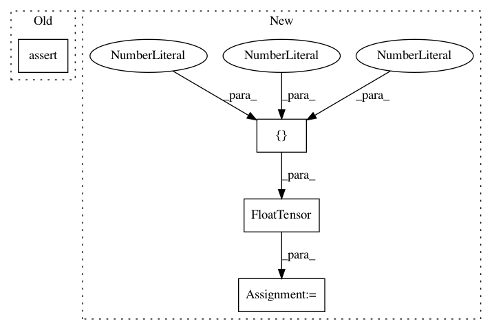

347618a5fbaa70fb9d2124d033275f44fdfcca2f,tests/test_nms.py,,test_nms_device_and_dtypes_gpu,#,44
Before Change
dets = base_dets.astype(np.float32)
supressed, inds = nms(dets, iou_thr, device_id)
assert dets.dtype == supressed.dtype
assert len(inds) == len(supressed) == 2
dets = torch.FloatTensor(base_dets).to(device_id)
surpressed, inds = nms(dets, iou_thr)
assert dets.dtype == surpressed.dtype
After Change
[35.3, 11.5, 39.9, 14.5, 0.9],
[35.2, 11.7, 39.7, 15.7, 0.3]])
base_expected_suppressed = np.array([[35.3, 11.5, 39.9, 14.5, 0.9],
[49.1, 32.4, 51.0, 35.9, 0.1]])
for device_id in range(torch.cuda.device_count()):
print(f"Run NMS on device_id = {device_id!r}")
// GPU can handle float32 but not float64
dets = base_dets.astype(np.float32)
expected_suppressed = base_expected_suppressed.astype(np.float32)
suppressed, inds = nms(dets, iou_thr, device_id)
assert dets.dtype == suppressed.dtype
assert np.array_equal(suppressed, expected_suppressed)
dets = torch.FloatTensor(base_dets).to(device_id)
expected_suppressed = torch.FloatTensor(base_expected_suppressed).to(
device_id)
suppressed, inds = nms(dets, iou_thr)
assert dets.dtype == suppressed.dtype
assert torch.equal(suppressed, expected_suppressed)
In pattern: SUPERPATTERN
Frequency: 3
Non-data size: 4
Instances
Project Name: open-mmlab/mmdetection
Commit Name: 347618a5fbaa70fb9d2124d033275f44fdfcca2f
Time: 2020-05-19
Author: maxim@bonnaerens.be
File Name: tests/test_nms.py
Class Name:
Method Name: test_nms_device_and_dtypes_gpu
Project Name: rusty1s/pytorch_geometric
Commit Name: b48c943b9f6248dbdd42d0fce44658b937098372
Time: 2017-10-23
Author: matthias.fey@tu-dortmund.de
File Name: torch_geometric/sparse/sum_test.py
Class Name: SumTest
Method Name: test_autograd
Project Name: open-mmlab/mmdetection
Commit Name: 347618a5fbaa70fb9d2124d033275f44fdfcca2f
Time: 2020-05-19
Author: maxim@bonnaerens.be
File Name: tests/test_nms.py
Class Name:
Method Name: test_nms_device_and_dtypes_cpu